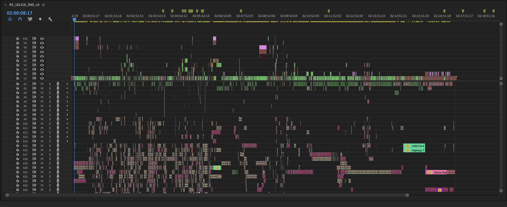
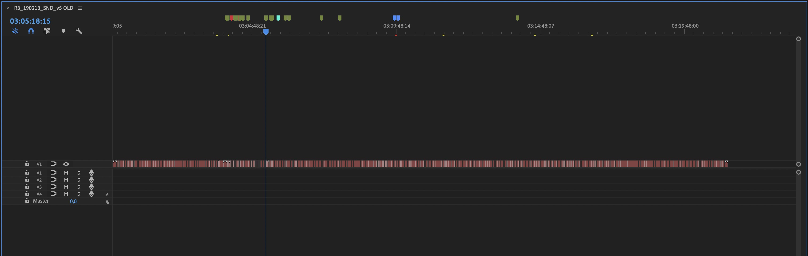
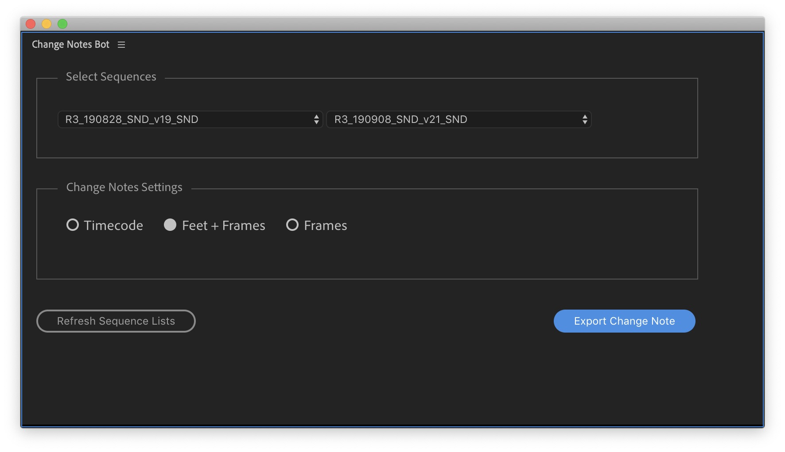
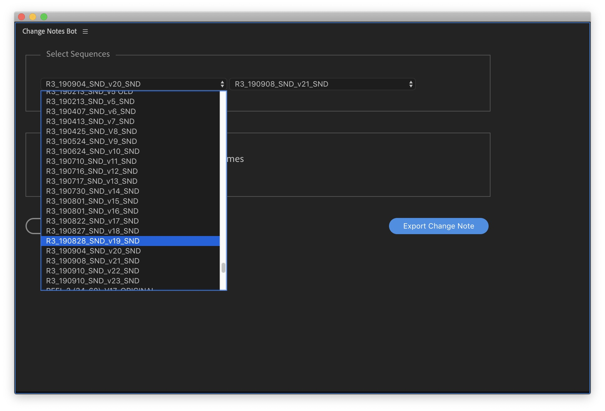
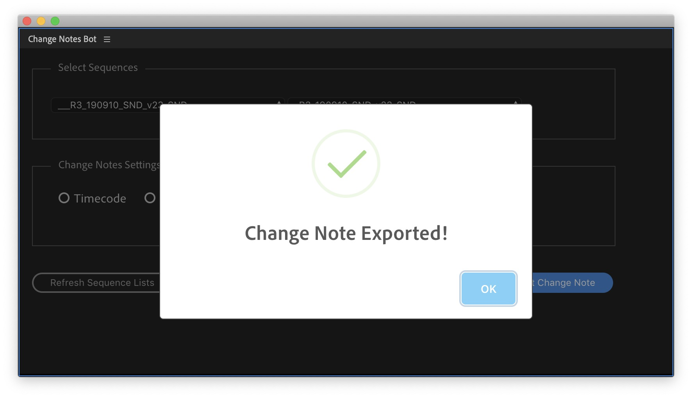

Change Note Bot Documentation
Introduction
Change Note Bot is a Premiere Pro panel that analyses and compares two sequences, two different versions of the same edit, and prints all the picture changes in a text file. Usually this text file is sent to the audio department, or VFX department, and helps to re-conform the sound session.
- It is directly integrated into Premiere. Forget about exporting EDLs or XMLs.
- Can be formatted using Timecode, Feet+Frames or Frame Count.
- An extra JSON file will be exported with all the data formatted accordingly.
This documentation website is intended to give a reference on how to use the panel and provide a brief overview of what a change note is. We assume that if you have landed in this website, you already have some experience creating change notes, and you are familiar with the audio turnover process.
What is a change note?
A change note is a human-readable step-by-step instructions printed in a text file that helps to convert the old picture cut to the new picture cut. This text file has many uses, but primarily it helps to automatically conform a Pro Tools session to the new cut.
It’s main body looks similar to this:

Installing and invoking the panel
Premiere Pro panels and extensions are installed using the Adobe Exchange Website. Once a panel is installed, it will be linked to your Adobe account.
Change Note Bot will work with Premiere Pro 14.0 and beyond.
Step by Step:
- Go to Change Note Bot panel in the Adobe Exchange Website.
- Sign in into your Adobe Account.
- Click in the Free button to install it.
- Launch Premiere Pro, or restart it if it was already running.
- Click in Windows -> Extensions -> Change Note Bot
- The panel should be invoked and visible in a floating panel.
- This new panel can be resized or docked as any other panel in Premiere Pro.

How to use Change Note Bot
Preparing the sequences
Before using the panel, you’ll need to prepare your sequences to get the best results. This is a common step in every production and is independent of the NLE you’re using. If you have had experience with turnovers, you should be familiar with this process.
The main goal is to flatten the whole reel into a single video track. The Change Note Bot panel will always analyze video track 1 from both sequences. Make sure your flattened reel is in video track 1.
Flattening your sequence into a single video track is the most complicated and time consuming step in the process. And probably the most important one too. It is recommended to go through this process with caution.
Original Reel
Flattened Reel
Using the panel
The Change Note Bot panel is a fairly simple panel. Once your sequences have been flattened, use the dropdown menus to select the old sequence and the new sequence, select your prefered output format and click on Export Change Note. A save dialog will pop up, pick a location and a name and save the file.
Some important points:- The dropdowns will list all sequences from any current open project at that time - including nested sequences.
- Use the ‘Refresh Sequences Lists’ button to refresh the dropdown sequence lists, for example, if you've created or deleted a new sequence.
- There are 3 different formats to choose from: Timecode, Feet+Frame and Frames.
- Timecode format will use the sequence start time for the output.
- Feet+Frame and Frames formats will use absolute time and it will always start at 0000+00
- If a file with the same name already exists on the selected location path, the panel will overwrite it.
Change Note Bot Panel
Picking your sequences
Progress Indication
Exported Files
The Change Note Bot panel will export 2 files with every export:
- A .txt file. This is the standard change note text file, and what is mostly sent to the audio department.
- A .json file. This is an extra file that is generated with the same information but formatted in a JSON structure. This file is easier to parse and can be read by a 3rd party application, because all the data is correctly structured in a defined way.
Customer Support
We'd love to hear your opinions and assist you with any problem you encounter while using the Change Note Bot. If you have any questions or issues regarding this panel please send an email to: Premiere Bot Team
We will respond to you as quickly as we can. Thank you.